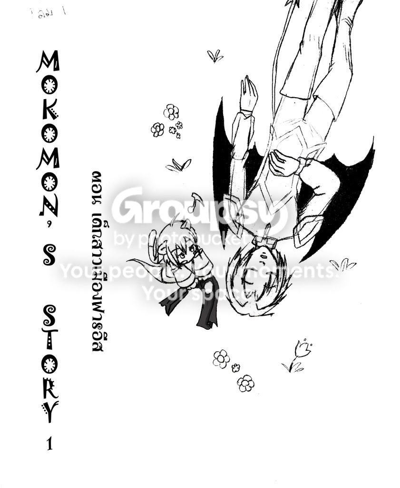
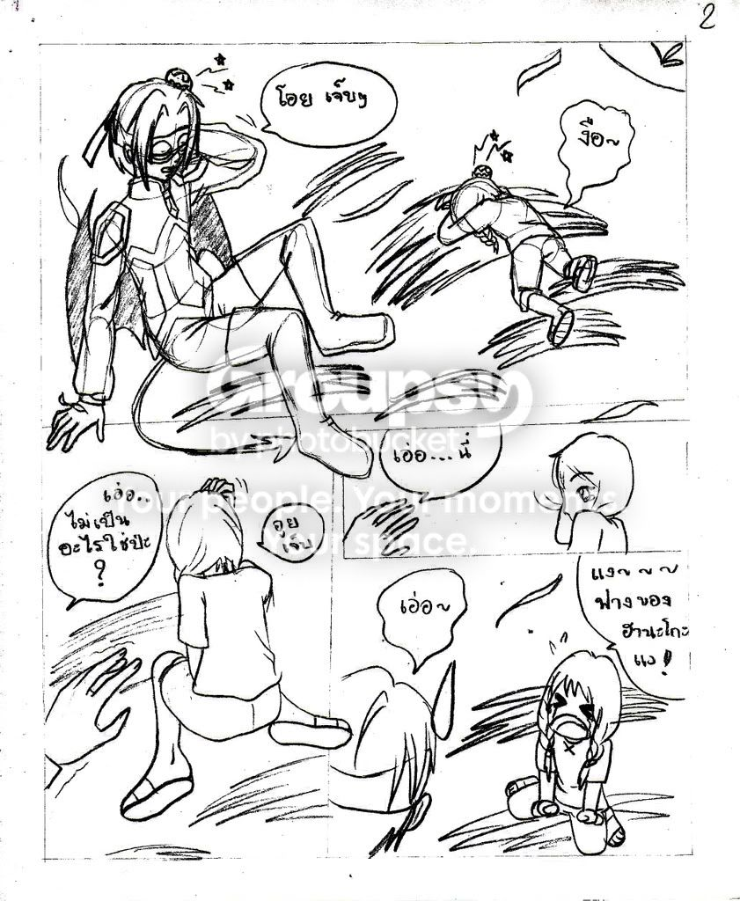
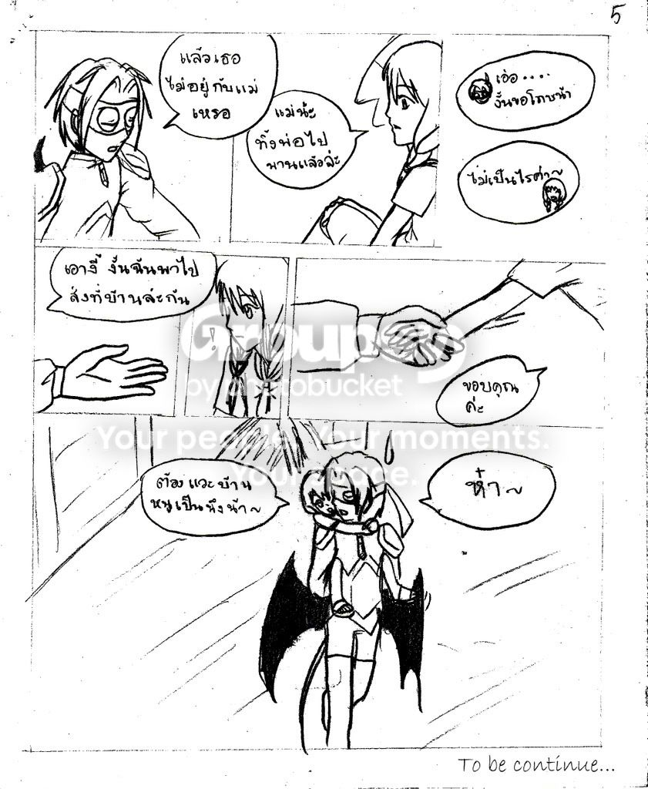

[Comic] ECO : Mokomon's Story 5 ตอน ฝาแฝดสาวต่างเผ่า
ข้ากลับมาแล้วย่าห์ 
กลับมาพร้อมการ์ตูน ฝีมือยังไม่พัฒนา แต่อยากลง
หวังว่าจะไม่ว่าอะไรกันนะค่ะ พอดีทำเรื่องนี้กับท่านม่อนตั้งแต่ก่อนสอบ
มีอยู่ 6 ตอน ค่ะ(ยังไม่จบด้วย) ใครที่เข้ามาอ่านก็ช่วยติหน่อยนะค่ะ
สนุกไม่สนุกยังไงก็ขออภัยด้วยค่ะ แต่นู๋จะสู้ๆค่ะ (คัมบะเต้(แปลว่าไรเนี่ย = =a)
แต่นู๋จะสู้ๆค่ะ (คัมบะเต้(แปลว่าไรเนี่ย = =a)


ช่วยติด้วยนะค่ะ จะเป็นพระคุณอย่างมากค่ะ

กลับมาพร้อมการ์ตูน ฝีมือยังไม่พัฒนา แต่อยากลง
หวังว่าจะไม่ว่าอะไรกันนะค่ะ พอดีทำเรื่องนี้กับท่านม่อนตั้งแต่ก่อนสอบ
มีอยู่ 6 ตอน ค่ะ(ยังไม่จบด้วย) ใครที่เข้ามาอ่านก็ช่วยติหน่อยนะค่ะ
สนุกไม่สนุกยังไงก็ขออภัยด้วยค่ะ
แต่นู๋จะสู้ๆค่ะ (คัมบะเต้(แปลว่าไรเนี่ย = =a)



ช่วยติด้วยนะค่ะ จะเป็นพระคุณอย่างมากค่ะ
 ครับ
ครับ


 ภาพใหญ่มากค่ะ(แต่ก็ยังอ่านจนจบ)
ภาพใหญ่มากค่ะ(แต่ก็ยังอ่านจนจบ)